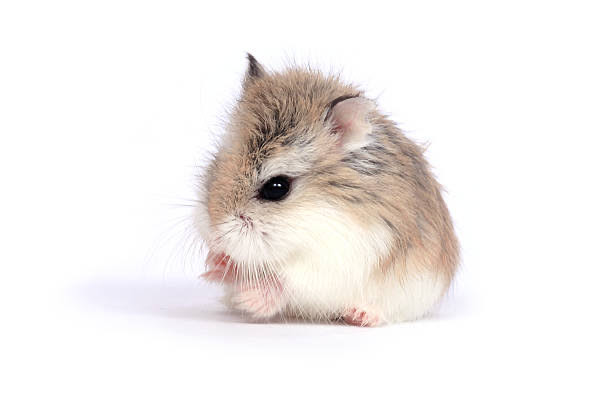

特徴
ロボロフスキーハムスターは非常に小型のハムスターで、体長は約5-7cm程度です。非常に活発で素早く動くため、見ているだけでも楽しめますが、飼育するには注意が必要です。
飼育方法
ロボロフスキーハムスターは小さなケージやトンネルが最適です。床材を多めに敷き詰めて、隠れ家を作ってあげると、安心して過ごすことができます。餌や水は定期的に交換しましょう。
注意点
非常に小さいため、ケージ内での移動に注意が必要です。また、他のハムスターと一緒に飼うのは避けた方が良いでしょう。ロボロフスキーは孤独を好む性格です。
